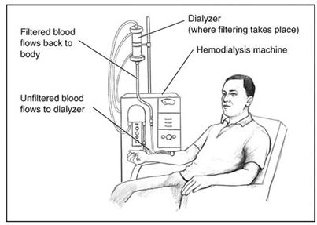

Treatements
The treatment of kidney disease depends on the underlying cause and the stage of the disease. It's important to note that kidney disease is a broad term that encompasses various conditions affecting the kidneys, such as chronic kidney disease (CKD), acute kidney injury (AKI), and specific kidney disorders.
Managing Underlying Conditions:
- Control blood pressure: High blood pressure is a common cause of kidney disease. Medications like ACE inhibitors or ARBs may be prescribed.
- Manage diabetes: For individuals with diabetes, maintaining blood sugar levels within the target range is crucial to prevent kidney damage.
- Treat infections: Kidney infections and urinary tract infections need prompt treatment to prevent damage to the kidneys.
Dialysis:
- In advanced stages of kidney disease, when the kidneys are no longer able to function adequately, dialysis may be necessary. Dialysis is a process that helps filter waste and excess fluids from the blood.

Kidney Transplant:
- For some individuals with end-stage kidney disease, a kidney transplant may be a viable option. This involves replacing a diseased kidney with a healthy one from a donor.
Regular Monitoring and Follow-up:
- Regular check-ups and monitoring of kidney function are essential to assess the progression of the disease and adjust treatment as needed.
Lifestyle Modifications:
- Quit smoking: Smoking can worsen kidney disease.
- Maintain a healthy weight: Obesity can contribute to the progression of kidney disease.
- Exercise regularly: Regular physical activity can help manage blood pressure and overall health.